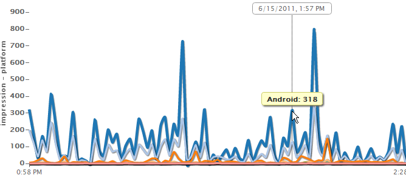

Embedding visualizations in your webpages is really a fast task with ReportGrid. First of all you have to be sure to include the two required javascript files.
The files are reportgrid-core.js and
reportgrid-viz.js. The first requires a parameter for your token id while the latter is a simple inclusion. The following example generates a Time Series Chart out of your data.
<!DOCTYPE html>
<html>
<head>
<title>MySite.com</title>
<script type="text/javascript"
src="http://static.reportgrid.com/api/js/v1/reportgrid-core.js?tokenId=[YOUR TOKEN ID]"></script>
<script type="text/javascript" src="http://static.reportgrid.com/api/js/v1/reportgrid-viz.js"></script>
<script type="text/javascript">
document.addEventListener("DOMContentLoaded", function(){
ReportGrid.timeSeries("#chart", [{
path : "/ad/mycampaign/",
event : "impression",
property : "platform"
}], {
start : "2 hours ago",
end : "30 minutes ago"
});
}, false);
</script>
</head>
<body>
<div id="chart"></div>
</body>
</html>
Note that by default, charts are unstyled and you will have to provide your color schemes and styles using a standard CSS file. If you want you can use our default stylesheet including the following line of code inside your <head> tag.
<link rel="stylesheet" type="text/css" href="http://static.reportgrid.com/api/css/v1/rg.css"/>
When you build a visualization the first parameter always states where the chart will be placed. The element argument must be a valid CSS selector (usually an id of an element in the format #chartid) or a html node.
Whenever you build a visualization you have to prepare a quey object that tells exactly what you need to display.
The bare bone of the query object consist in setting the path where you tracked your events.
var query = { path : "/path/to/my/events/" };
The result of this query will display the quantification of the events in the path.
To display the quantification of the properties of each event use the following query object:
var query = { path : "/path/to/my/events/", event : "eventname" };
Finally if you want to display the quantification of each value for a certain property use the following query object:
var query = { path : "/path/to/my/events/", event : "eventname", property : "propertyname" };
Some charts have specific query options that are described in the chart sections.
Some common options apply to every kind of visualization. Those parameters are passed as an object as the first argument of a visualization method. Many visualizations do not even require that argument at all.
For time related visualizations you will want to define a range of dates, you can do that using the start and end fields:
var options = {
start : "yesterday",
end : "now"
};
You can use human readable dates like the ones shown above or simply declaring a date value like this "2011-06-15".
In most of the cases the size of the visualization is automagically determined by the context (set a size for the container element and the chart will just fill that space). In any case you can force the size of the visualization by using the "width" and "height" parameters. The size must be set in integer units (each unit is a pixel).
timeSeries(element, query, options)
ReportGrid.timeSeries(
"#chart", [{
path : "/ad/campaign/",
event : "impression"
}, {
path : "/ad/campaign/",
event : "click"
}], {
start : "2 hours ago",
end : "30 minutes ago",
lineinterpolator : "cardinal-0.85"
});
The example above might produce something like this:
ReportGrid.timeSeries(
"#chart", {
path : "/ad/campaign/",
event : "impression",
property : "platform"
}, {
start : "2 hours ago",
end : "30 minutes ago",
lineinterpolator : "cardinal-0.85"
});
The example above might produce something like this:

As a query argument you can pass either a single query object or an array of query objects to display multiple series in the same chart. You can use that technique to display multiple events with different Y scales. To display multiple values on the same charts just use one query object an specify both "event" and "property".
The options argument accepts a "lineinterpolator" field to interpolate the line drawing. The accepted values are:
- linear
- stepbefore
- stepafter
- basis
- cardinal or cardinal-x where x is a tension value
- monotone
By default, the x scale will display regular tick values. If you want to just display the first and the last labels of the scale, use the following option (default is "false"):
var options = { xaxis : { labelsonbounds : true } };
To display or hide the horizontal lines that match the y scale ticks, use the yscale.shoruler. By default it is set to true. Note that this feature only works with time series that use just one y scale.
var options = { yscale : { showrulers : true } };
Leaderboards and Totals charts are basically the same kind of information displayed in different ways. While a leaderboard is essentially a list of labels, Totals Chart is a graphical representation in the form of a pie chart (more strictly a donut chart). For this reason the same options apply to both.
leaderBoard(element, query, options)
ReportGrid.leaderBoard(
"/ad/campaign/",
event : "impression",
property : "platform"
);
The example above might produce something like this:
totals(element, query, options)
ReportGrid.totals(
"/ad/campaign/",
event : "impression",
property : "platform"
);
The example above might produce something like this:
Optionally you can pass a "top" or "bottom" field to your query object with an integer value to indicate that you only want the top/bottom results of a certain series. The "other" field (true or false value) can be used to add a series of the cumulative values that don't fall into the range specified with "top" or "bottom".
If you want to determine if a series should be included in your visualization at runetime, you can pass a "filter" field. The filter must be a function that takes a string (the label of the series) and an integer (the total count for that series) as parameters and that returns a boolean value (true for inclusion, false for exclusion).


 REST API
REST API